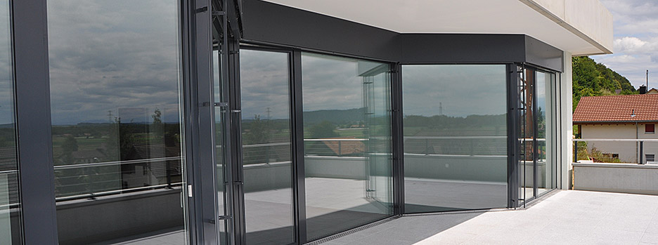
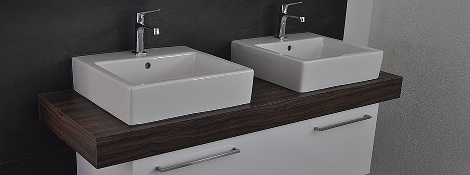
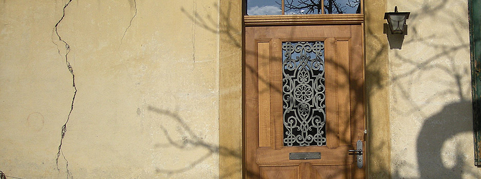

Gampelen · BESchreinerei / Innenausbau
Schreiner
zwei.

Einblicke
Arbeiten im Raum und am Haus.


Tätigkeitsfelder
Aus einer Hand.
- Möbel
- Fenster
- Türen
- Parkett
- Innenausbau
Schreiner2 AG
Gewerbestrasse 10
3236 Gampelen
Kontakt / Gewerbestrasse 10 · 3236 GampelenSchreiner2 AG
Eine Idee für Ihren Raum?
032 338 16 84